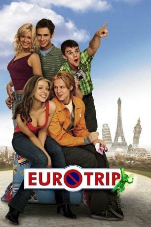
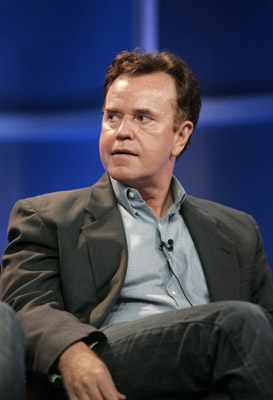

#2803 Eurotrip
Alternativ: EuroTrip
 
 IMDB-Wertung: 6.6 / 10
IMDB-Wertung: 6.6 / 10  Metascore: 45
Metascore: 45 
Scott hielt Mieke, seine Briefbekanntschaft aus Berlin, immer für einen Kerl. Doch kurz nachdem er “ihn” übelst beleidigt hat, muss er feststellen, dass Mieke die Frau seiner Träume ist. Dumm nur, daß sie jetzt auf keine E-mail mehr antworten will. Also macht sich Scott kurzerhand mit seinem Kumpel Cooper und den Zwillingen Jenny und Jamie auf nach Europa.
Jahr: 2004
Dauer: 86 Minuten
FSK: 12
Land: USA Studio: DreamWorks DistributionTonspuren: DD5.1 - ,
Untertitel: Deutsch,
Auflösung: 1080p (1920x1080) Größe: 6287 MB
Genre: Komödie
Regisseur: Jeff Schaffer, Alec Berg, David Mandel
Drehbuch: Alec Berg, David Mandel, Jeff Schaffer
Soundtrack: James L. Venable
Darsteller:
- Scott Mechlowicz als Scott Thomas
 Jacob Pitts als Cooper Harris
Jacob Pitts als Cooper Harris- Kristin Kreuk als Fiona
 Michelle Trachtenberg als Jenny
Michelle Trachtenberg als Jenny- Travis Wester als Jamie
 Matt Damon als Donny
Matt Damon als Donny- Molly Schade als Candy
- Jessica Boehrs als Mieke
 Vinnie Jones als Mad Maynard
Vinnie Jones als Mad Maynard- Petr Jákl als Gunter
 J.P. Manoux als Robot Man
J.P. Manoux als Robot Man- Patrick Rapold als Christoph
 Fred Armisen als Creepy Italian Guy
Fred Armisen als Creepy Italian Guy Lucy Lawless als Madame Vandersexxx
Lucy Lawless als Madame Vandersexxx Jana Pallaske als Anna, The Camera Store Girl
Jana Pallaske als Anna, The Camera Store Girl Diedrich Bader als Mugger
Diedrich Bader als Mugger- Roger Denesha als Bakery Man
- Dominic Raacke als Trucker
 Rade Serbedzija als Tibor
Rade Serbedzija als Tibor-  Steve Hytner als Green Fairy
- Walter Sittler als Mieke's Father
 Patrick Malahide als Arthur Frommer
Patrick Malahide als Arthur Frommer Ellen Savaria als Tourist Woman in Vatican
Ellen Savaria als Tourist Woman in Vatican- Predrag Bjelac als Italian Guy at Vatican
 Nick Jameson als Reporter
Nick Jameson als Reporter- Pat Kilbane als American Robot Guy
 Joanna Lumley als Hostel Clerk
Joanna Lumley als Hostel Clerk Jeffrey Tambor als Scott's Dad , uncredited
Jeffrey Tambor als Scott's Dad , uncredited- Cathy Meils als Mrs. Thomas
- Nial Iskhakov als Bert
- J. Adams als Guitars - Lustra, Donny's Band
- Christopher Baird als Vocals - Lustra, Donny's Band
- Nicholas J.M. Cloutman als Bass - Lustra, Donny's Band
- Bruce Fulford als Drums - Lustra, Donny's Band
- Jakki Degg als Missy
- Lenka Vomocilova als Sissy
- Andrea Stuart als Courier Clerk
- Paul Oldham als Hooligan
- Mike McGuffie als Hooligan
- John Comer als Hooligan
- Jeff Smith als Hooligan
- Michael Cella als Hooligan
- David Fisher als Hooligan
- Christian Dunckley Clark als Hooligan
- Jakub Kohák als French Soccer Fan
- Eric Moscoso Vertiz als Naked Spanish Guy
- Labass Kanoute als Naked African Guy
- Sota Sakuma als Naked Tiny Asian Guy
- Edita Deveroux als Nude Beach Lady
- Petra Tomankova als Nude Beach Lady
Datei: X:\2004(A-F)\Eurotrip (2004, FSK12, 1920x1080).mkv seit 18.12.2015
Festplatte: HD 2003-2004-2005(A-F)
 Es gibt insgesamt 39 Filme in der Gruppe '2004(A-F)'
Es gibt insgesamt 39 Filme in der Gruppe '2004(A-F)'